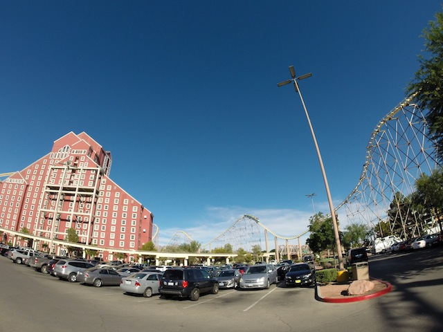
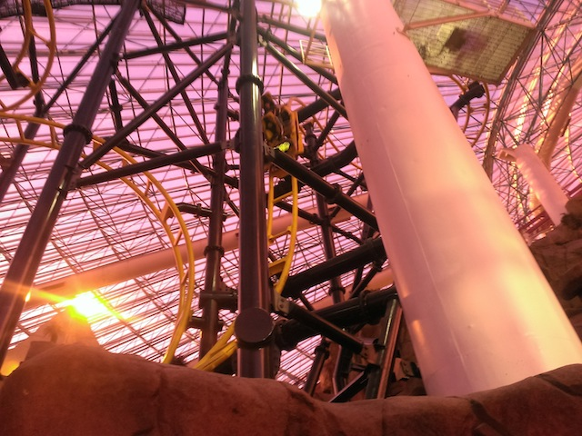
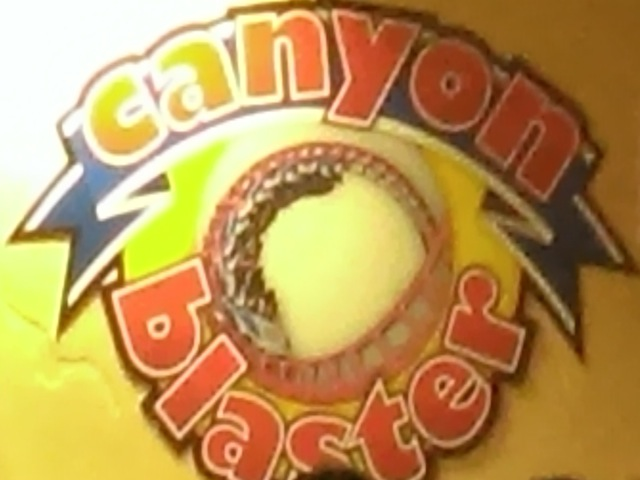
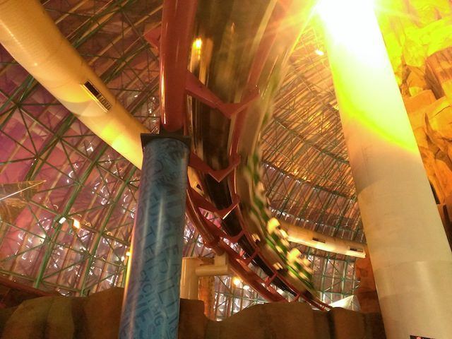
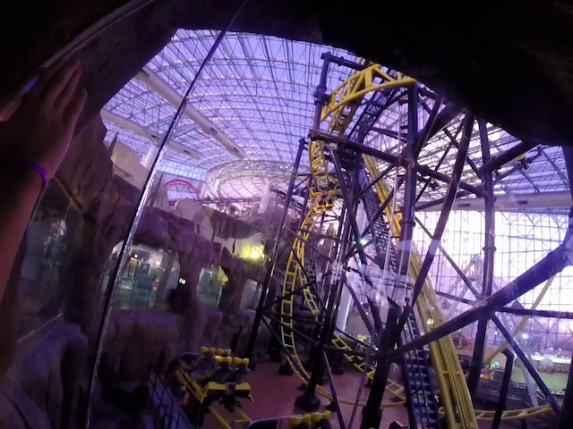
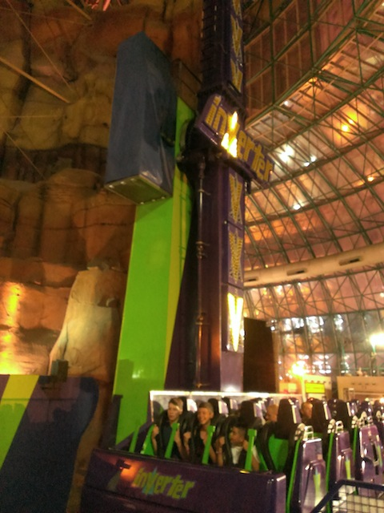

All right. Time for another Incrediblecoasters Mini-Road Trip. This was originally just meant to be a Day Trip where we would go to the Adventuredome to ride El Loco and then go to the Penn Party again because it is f*cking awesome!!! But while we were driving to Las Vegas, we were joking about how we were only half-way to Lagoon and suicide nighting it to Lagoon. Well, after enough joking, we just decided to do it. Most spontaneous road trip ever!! And of course, we gotta stop and ride Desperado on the way there.

Desperado still kicks ass!!!
All right. Here's one of the reasons we ended up going back to Las Vegas this year.
It's been 4 years since I last rode Steel Hawg, so I was really curious to see how this would be in comparison.
Holy Crap!!! Best new coaster in Nevada!!! This beats the CRAP out of Steel Hawg!!!

The lack of brakes on the first drop REALLY makes a difference in drop quality. =)
Here's an El Loco Raw Footage Video to show you around the ride.

Well, we had the all day wristbands, so we might as well get on Canyon Blaster.
Fun random fact. These trains came from Drachen Fire.
According to John, they did some work to Canyon Blaster over the off season.
HOLY CRAP!!! Canyon Blaster is SO MUCH BETTER!!! Last year, it was just a mediocre loopscrew, but this year, it was HAULING ASS!!!!

I must say, ever since John started running the Adventuredome, it TREMENDOUSLY improved, as did every place in Vegas he ran. John, please run for mayor of Las Vegas cause you know how to run this place.
Considering how rare Chaos are now, I am super happy to see Adventuredome still having theirs.
Fun fact. All of El Loco came through that door.

This looks so wrong, but feels so right!!!
El Loco gets a thumbs up from Incrediblecoasters.

Continuing with the theme of great flat rides here, they also have an Inverter here.
For dinner, we took John's advice and tried out the Pepper Mill for dinner.
Love the rock candy dispenser that they had for coffee as a form of sugar.
This resteraunt is awesome. Not only was the food really good, but they also had decent prices. It wasn't up-charged at a disgustingly high price like most places on the Strip. Thanks for the suggestion John. Great seeing you again and I'm looking foreword to hanging out with you next time we're in Las Vegas.
Nice timing with the volcano erupting right as we drove on by.
Well after how awesome last year was, I just had to make it back again this year.
Hey look!! The TAM Whiteboard is here (One of these days, I'm gonna actually go to TAM).
Skeptic Fatass Stan is awesome!!
Every year, Penn's Bacon & Doughnut Party is just f*cking AWESOME!!!
Not only was this is traditional party with bacon, doughnuts, strippers, and the No God Band, but this also was the grand finale for Director's Cut, the movie Penn is making that just seems AWESOME!!!
♫ I QUIT MY JOB!!! MY JOB BECOMES HUNTING YOU!!! ♫
Great. Even within the Church of Bacon, I'm a sinner who's STILL going to hell. Screw it, I'll keep my doughnuts lying with each other. =)
Now this is how all partys should be. Topless.
Oh yeah. The Bacon and Doughnuts. Again, yum.
And again, we met up with Penn Jillette briefly this year. I did speak to him last year, but it was mostly just thank you for the Party, Penn's Sunday School, Bullsh*t, and for having the party right before the Texas/Rocky Mtn Road Trip and then talking about dates. This year, we actually spoke about random sh*t, such as Screenwriting, what advice I should do to have a carrer, why the f*ck I was just recently in Finland, the fact that we're crazy enough to be driving to Salt Lake City right after this party, and how I cliff jump instead of surf. Again, Penn is a total badass and I look foreword to your party next year. Glad you're amused by the crazy crap we do. =)